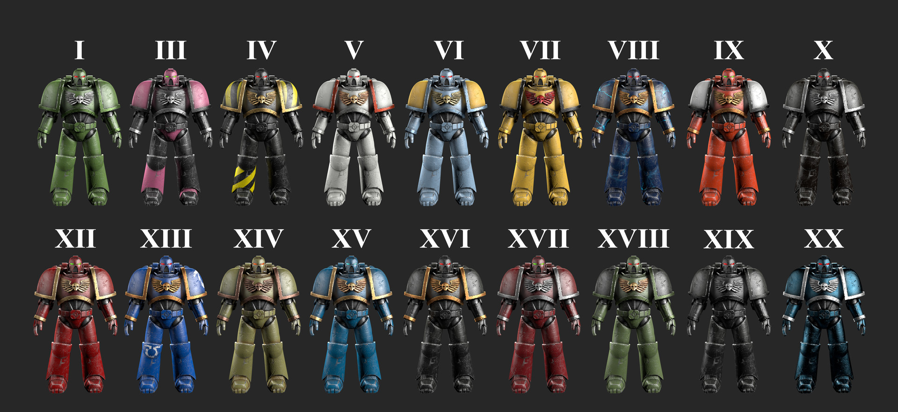

- Темные ангелы
- Удалено
- Дети императора
- Железные воины
- Белые шрамы
- Космические волки
- Имперские кулаки
- Повелители ночи
- Кровавые ангелы
- Железные руки
- Удалено
- Пожиратели миров
- Ультрамарины
- Гвардия смерти
- Тысяча сынов
- Сыны Хоруса
- Несущие слово
- Саламандры
- Гвардия Ворона
- Альфа-легион

Назад